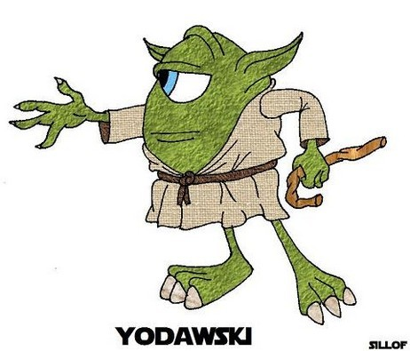
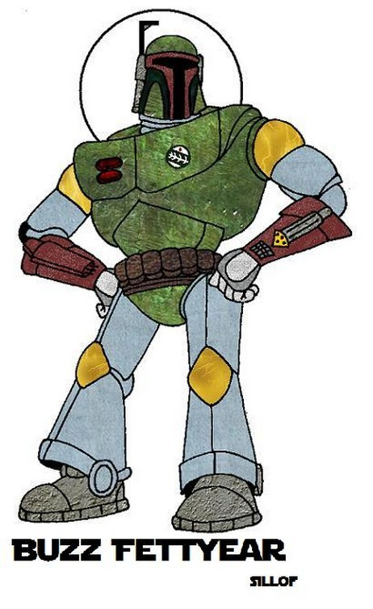
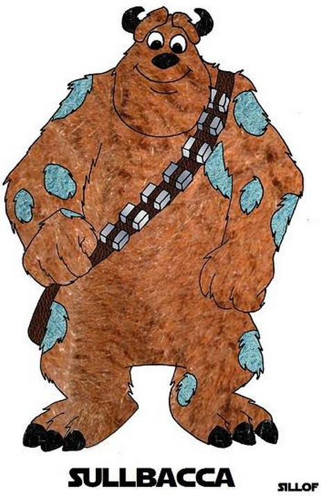
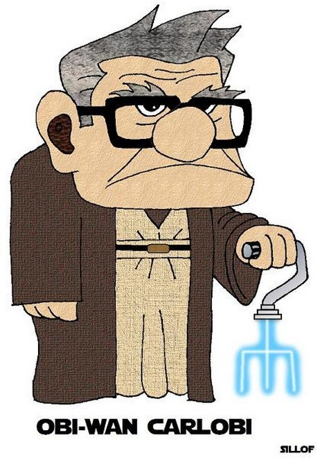

Mon, 23 Aug 2010 16:17:00 · Pixar · Starwars · LucasFilm · MonsterInc · ToyStory · Yoda · sci-fi · movies
pixar vs star wars ever wonder how awesome it




Pixar vs Star Wars
Ever wonder how awesome it would be had all that cool Pixar characters meets with Star Wars crew? Well, wait no more..!
For more dose of awesomeness check out http://is.gd/eyMLL
~ Thx to Paul Tassi